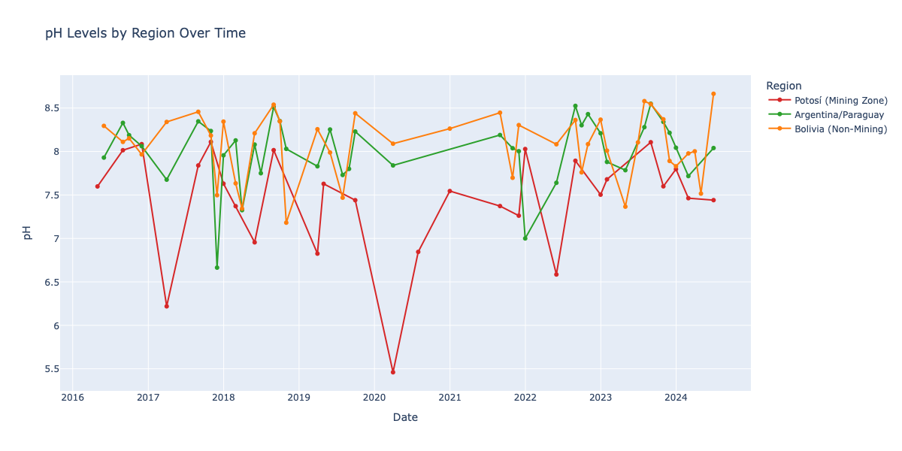
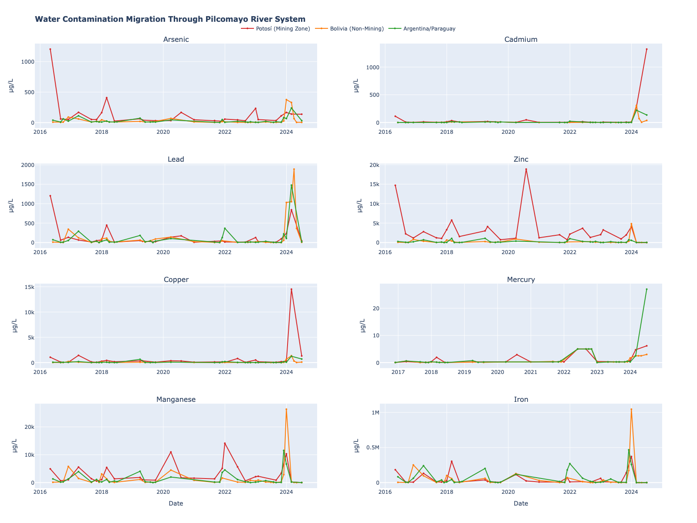
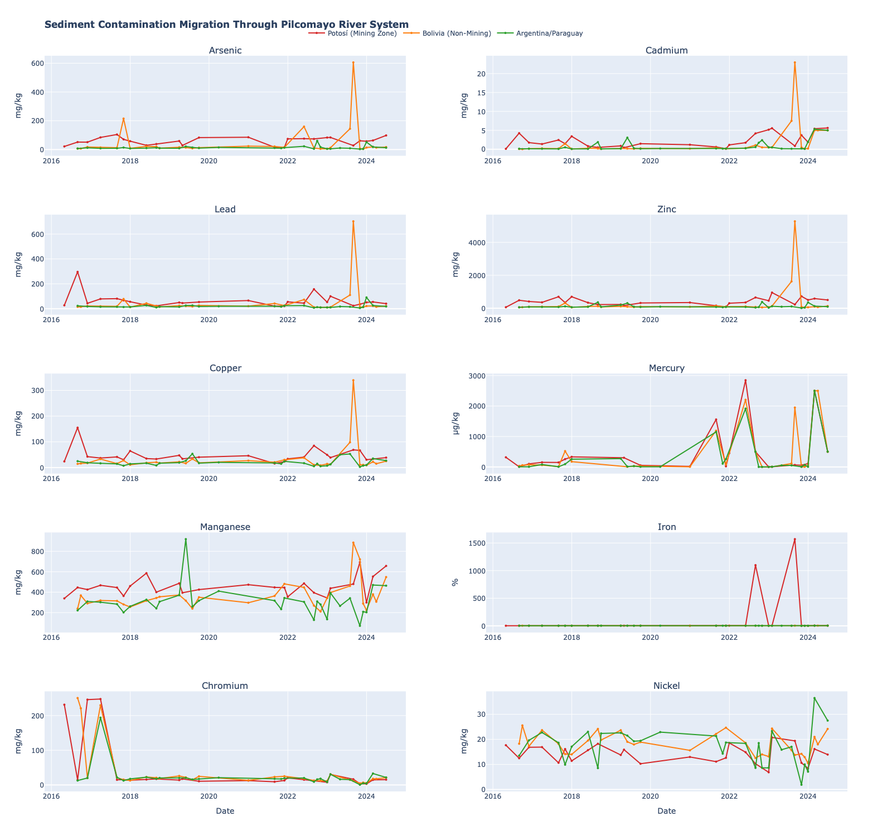

850 km. 8 Years. One Seasonal Cycle.
Every wet season, rainfall flushes metals from Potosí's tailings into the river. Every dry season, those metals settle into the riverbed and write a new layer of toxic sediment. This cycle is the engine that builds the contamination reservoirs the rest of this site documents — what hypoxic events mobilize, what partitioning coefficients describe at equilibrium, and what remediation must outpace.
Why This Cycle Is the Engine
Sediment-water partitioning measures where metals sit at any given moment. Hypoxic events explain how that equilibrium breaks. The seasonal cycle is what creates the equilibrium in the first place — the time-domain process that loads metals into the water column every wet season and writes them into the sediment record every dry season.
Two phases. One reservoir. Eight repeats.
The partitioning analysis quantifies where metals sit at any given moment; this page explains how they got there. Each annual loop transfers a quantifiable fraction of the basin's metal load between the water column and the riverbed — and each loop adds to a cumulative toxic sediment burden that has been growing for at least eight years.
Two pages tell the rest of the story. Sediment-water partitioning measures the steady-state ratio between the two phases for each metal. Hypoxic events document what happens when a low-oxygen disturbance breaks the cycle and releases sediment-bound metal back into the water column outside the normal seasonal pulse.
Scale of the Dataset
Wet Season — Metals Enter the Water Column
From November through April, rainfall flushes mine tailings and contaminated soils into the Pilcomayo. Dissolved metals spike across the basin — but the size of the spike depends on the metal and on where you stand. Median water-column arsenic at Potosí rises from 15.0 µg/L in the dry season to 47.5 µg/L in the wet season; cadmium climbs from 2.5 to 9.25 µg/L. The most extreme contrast is for lead at the distal Argentina/Paraguay stations, where median water-column concentrations swing from 10.0 µg/L in the dry season to 292.0 µg/L in the wet — nearly thirty-fold.

What you are looking at: the basin's pH split, plotted over eight years. Each line is one of the three regions; vertical position is pH; horizontal axis is time. The purple band sits low and stays low; the green band sits high and stays high. Detail: Potosí mining zone (purple) consistently records pH 3–5, the acid-mine-drainage signature of the headwaters. Bolivia non-mining (orange) shows seasonal pH recovery as wet-season tributaries dilute the acid load. Argentina/Paraguay (green) approaches near-neutral pH 7–8 year-round.

What you are looking at: each row is one monitoring station, ordered top-to-bottom by distance downstream from the Potosí headwaters. Bright vertical bands are wet-season concentration spikes; the same bands repeat every November–April across all eight years. Top rows (source-proximal) are warmer year-round; bottom rows (distal) flash bright only during wet-season pulses. Detail: water-column dissolved metal concentrations for As, Cd, Pb, and Zn across 46 stations, 2016–2024. Color scale is concentration (µg/L); region color codes are red = Potosí mining zone, orange = Bolivia non-mining, green = Argentina/Paraguay.
Dry Season — The Sediment Response Is Metal-Specific
The popular shorthand — "wet season puts metals in the water, dry season puts them in the sediment" — is correct in direction but flat in detail. The data tell a sharper story: the sediment phase responds, but it does not respond uniformly. Each metal has a seasonal personality that maps directly to its binding chemistry.

What you are looking at: the same heatmap layout as the water-column figure, but for sediment concentrations (mg/kg). Compare the two side by side — bright bands here fall in May–October (dry season), the inverse of the wet-season bands in the water-column heatmap. Stations are arranged top-to-bottom by km from source. Detail: sediment concentrations for As, Cd, Pb, and Zn, 2016–2024. The seasonal contrast is most visible for Zn at Potosí (top rows of the Zn panel); As and Pb show modest dry-season increases at Potosí; Cd remains essentially stable across seasons throughout the basin.
Four Metals, Four Seasonal Personalities
The partitioning analysis establishes the steady-state Kd hierarchy: Pb > As > Zn > Cd. The seasonal cycle is where that hierarchy actually plays out in time. Each metal's wet/dry behavior is the time-domain fingerprint of its binding chemistry.
Observed — ~30× wet/dry water-column ratio at Argentina/Paraguay (292.0 → 10.0 µg/L); modest sediment swing at Potosí (19.1 → 21.5 mg/kg).
Verdict — confirmed.
→ Full story
Observed — most muted seasonal swing of any metal; ~3× wet/dry at Potosí (15.0 → 47.5 µg/L water column); 16.5 → 18.4 mg/kg sediment.
Verdict — confirmed (oxide buffering damps the cycle).
→ Full story
Observed — clear wet-season pulse in water column (Potosí: 2.5 → 9.25 µg/L); sediment essentially stable across seasons basin-wide; ~30× water-column ratio at Arg/Para reflects extreme dilution at the distal end.
Verdict — confirmed (water-mobile, weakly accumulating in sediment).
→ Full story
Observed — sediment nearly doubles at Potosí dry season (88.8 → 179.0 mg/kg) — the largest dry-season sediment enrichment in the dataset.
Verdict — confirmed (resilience translates directly to dry-season accumulation).
→ Full story
The Inverse Hand-off, Visualized
The numbers above describe individual metals at specific regions. The interactive panel below shows the same inverse relationship across all 46 stations and all four metals, in both matrices, simultaneously. Toggle between wet and dry season — the bars in the water-column panel and the sediment panel reverse polarity in lockstep. This is the engine running, viewed in one frame.
What you are looking at: two synchronized panels — water-column concentrations on one side, sediment concentrations on the other. The wet/dry toggle changes both at once. When the water-column bars are tall, the sediment bars are shorter; when the season flips, so does the contrast. Detail: all 46 monitoring stations, 2016–2024 medians, the four priority metals (As, Cd, Pb, Zn). Sample sizes per group range n = 21–76 (water) and n = 40–175 (sediment) per Figure 4.4.1a in the report.
The 800 km Transport Corridor
The seasonal cycle plays out along a longitudinal gradient. Arsenic concentrations decline sharply with distance from the Potosí headwaters: source-proximal stations record median values more than an order of magnitude higher than distal stations at the Argentina/Paraguay border (report §4.4.1, Figure 4.4.1b). Dilution and sedimentation attenuate peak loads along the 800 km corridor, but persistent non-zero concentrations downstream confirm that contamination reaches transboundary waters throughout the eight-year monitoring record.
The spatial dimension matters because the seasonal cycle is not the same in every region. Source-proximal stations live with elevated metal loads year-round and show the smallest wet/dry ratios (the wet-season floor is already high). Distal stations show the largest wet/dry contrasts because their dry-season baseline is near zero. The cycle's amplitude is a function of where you stand in the corridor — and so is the policy question it raises.
What the Cycle Demands
Eight years of quarterly monitoring across 46 stations resolve four claims about the seasonal exchange cycle, and each claim has a direct operational consequence.
What the Data Prove
- The inverse water ↔ sediment hand-off is real and quantified: water-column metals fall 3× to ~30× from wet to dry season depending on the metal and the region.
- The four metals follow distinct seasonal personalities consistent with their partitioning mechanisms — Zn accumulates strongest in dry-season sediment; Cd is the most water-mobile; Pb shows the largest distal wet/dry ratio.
- Cumulative toxic sediment burden grows with each annual cycle. Eight years of data show the dry-season layer is laid down repeatedly; the reservoir is structural inheritance.
- Spatial dilution attenuates peak loads but does not eliminate transboundary risk — non-zero concentrations persist at Argentina/Paraguay stations across the entire monitoring record.
What It Implies for Action
- Monitor wet-season-weighted. Water-column health metrics computed from annual or dry-only sampling will systematically under-report peak risk by an order of magnitude or more at distal stations.
- Remediate in the dry season. Metals are settled, mappable, and concentrated. Sediment dredging or stabilization is most tractable May–October when water-column flux is at minimum.
- Outpace recharge. Each wet season recharges the mobilizable mass. Remediation that removes one year's worth of accumulation while two years' worth is being deposited upstream loses ground every cycle.
- Treat hypoxic events as superimposed acute disturbances on a chronic seasonal substrate — they do not replace the cycle, they ride on top of it.
Continue Reading